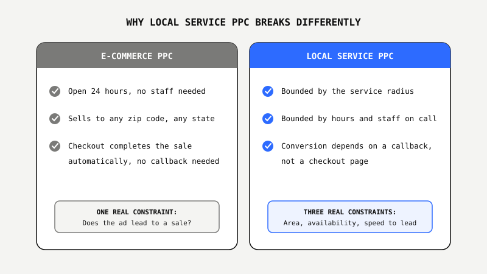
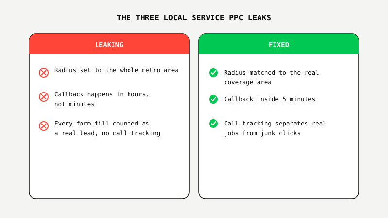

Local Service PPC Doesn't Fail On Clicks. It Fails On Bad-Fit Leads.
 By Akshat Singh··8 min read·Paid Advertising
By Akshat Singh··8 min read·Paid Advertising
Key Takeaways
- Local service PPC fails differently than e-commerce PPC. E-commerce loses money on cart abandonment. Local service loses money on leads outside the service area, form fills nobody answers, and callbacks that come in too late to matter.
- The three most common leaks in a local service PPC account: a service radius set wider than the business can actually cover, slow lead response time, and no call tracking to separate real jobs from junk clicks.
- A widely cited study run out of MIT and Kellogg, based on more than 15,000 leads and over 100,000 dials, found the odds of reaching a new lead drop 100 times when the callback takes 30 minutes instead of 5. For local service businesses, speed to lead is often a bigger lever than the ad campaign itself.
- Ad fraud analytics firm Lunio estimated $63 billion in global ad spend lost to invalid traffic in its 2026 report, bots, scrapers, and clicks with no buying intent behind them. Local service accounts running loose geographic targeting are especially exposed to this kind of waste.
- Fix the geography, speed, and lead-quality leaks before touching bids or creative. That order is what separates a local service PPC account that generates real jobs from one that just generates form fills.
Remember The Locksmith Who Answers Every Call, Even Three States Away?
Search "locksmith near me" in a lot of US cities and the first few results aren't local locksmiths at all. They're call centers running ads for cities they've never set foot in. They answer the phone, quote a low price, then dispatch whoever's available, sometimes subcontracting the job out at a markup once you're already locked out and desperate. It's a well documented problem in the locksmith industry, one state attorneys general have gone after directly.
Most local service PPC accounts aren't running a scam. But a lot of them make the same underlying mistake by accident: chasing every click a keyword can generate, with no filter for whether the person clicking is actually inside the service area, actually ready to buy, or actually going to pick up the phone when someone calls back.
E-commerce PPC and local service PPC get lumped together constantly. Same platform, same auction, same bidding strategies. They are not the same game.
Why Local Service PPC Breaks Differently Than E-Commerce PPC
E-commerce PPC has one real constraint: does the ad lead to a sale, from anyone, anywhere, at any hour. Local service PPC has three: is the click inside the area the business can actually serve, is someone available to respond when the lead comes in, and does the callback happen fast enough to catch the lead before they call a competitor instead.
A shopper who clicks an ad for running shoes at 2am on a Tuesday can still check out, get a confirmation email, and have the shoes shipped by Thursday. Nobody has to answer a phone. A homeowner whose water heater fails at 2am on a Tuesday and clicks an ad for a plumber is not going to wait until Thursday, or even until 9am. They're calling the next plumber on the list, and the ad spend that generated that first click is gone the moment the second ad wins the call.

The Geography Leak: Your Service Radius Is Costing You Money
The single most common leak in a local service PPC account is a service radius set wider than the business can actually cover, one that converts leads the business either declines outright or serves at a loss because the job sits forty-five minutes outside the usual coverage area.
Google's default location targeting for a Search campaign is often the entire metro area, sometimes the entire state, unless someone deliberately narrows it. That default makes sense for a retailer shipping nationwide. It makes no sense for an HVAC company that only dispatches technicians within a 25-mile radius. Every click and every form fill from outside that radius still costs money. It just never turns into a job.
This is exactly the kind of leak a 20-minute self-audit catches: pull the Locations report, compare it against the radius the business can actually serve, and see how much of the budget is going somewhere the business was never going to say yes to.
The Speed-To-Lead Leak: The First Callback Wins The Job
A widely cited study run out of MIT and Kellogg, based on more than 15,000 leads and over 100,000 dials across six companies, found the odds of actually reaching a new lead drop 100 times when the callback takes 30 minutes instead of 5. Local service leads behave the same way, arguably worse.
A B2B software buyer filling out a demo request form is comparing three or four vendors over a week. A homeowner with a burst pipe is calling three plumbers in the next ten minutes and hiring whoever answers first. The ad campaign did its job the moment it generated that call. Whether the business wins the job from there has almost nothing to do with the campaign and almost everything to do with what happens in the next five minutes.
Why spend money generating a lead nobody answers for four hours?
The Junk-Lead Leak: Not Every Form Fill Is A Customer
Not every form fill or phone call a local service PPC campaign generates is a real lead. Some are wrong numbers, some are competitors checking pricing, some are bots. Without call tracking that separates a two-minute hang-up from a booked job, the account has no way to tell which keywords are producing real work and which are just producing noise.
Ad fraud analytics firm Lunio estimated $63 billion in global ad spend was lost to invalid traffic in 2026: bots, scrapers, and clicks with no buying intent behind them. Local service accounts are especially exposed because so much of the conversion tracking still runs on form fills and click-to-call buttons instead of verified, recorded calls. A campaign optimizing toward a conversion event that includes junk leads will keep bidding up the keywords producing that junk, because the platform has no way to know the difference.

What Smart Local Service Businesses Do About It
Businesses that fix the geography, speed, and lead-quality leaks before increasing ad spend see the difference immediately. Businesses that just add budget on top of a leaking account leak faster, they just don't notice until the invoice arrives.
One Meta and Google account we rebuilt around exactly this framework, tighter geographic targeting, faster lead routing, and call tracking that separated real jobs from noise, cut cost per lead in half and produced 195 qualified leads in 60 days. That's the kind of result fixing the leaks produces before a single dollar of new ad spend gets added.
Not sure how much of your local service budget is leaking? We'll show you free.
Get The Free Lead Gen Audit ↗